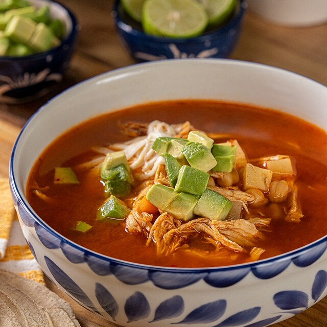

Caldo Tlalpeño

Descripción
Delicioso caldo tradicional de México con un caldo a base de caldo de pollo, jitomate, cebolla y ajo, acompañado de pollo desmenusado, zanahorias, garbanzos.
Corónalo con unas rodajas de aguacate, crema y queso fresco, y disfruta de este platillo completo y delicioso.
Ingredientes
- 2 litros de caldo de pollo
- 4 jitomates
- 1/3 de cebolla
- 2 dientes de ajo
- 1 cucharada de aceite
- 400 gramos de pechuga de pollo
- 1 rama de epazote fresco
- 2 chiles chipotles
- 3 zanahorias
- 1 taza de garbanzo cocido
- 1 aguacate
- Queso panela
- Sal al gusto
Pasos
- En un sartén calienta el aceite y fríe la cebolla, el ajo y el jitomate, licúa y reserva.
- Calienta el caldo de pollo y añade la salsa anterior al caldo caliente. Luego agrega las zanahorias cortadas en cubitos.
- Cuando las zanahorias empiecen a cocerse, agrega el epazote, los garbanzos, el chile chipotle, sazona con sal y cocina hasta que las zanahorias tengan la consistencia que deseas.
- Deshebra la pechuga de pollo cocida y agrega al caldo.
- Sirve caliente acompañado de láminas de aguacate y queso panela en cubitos.
Home